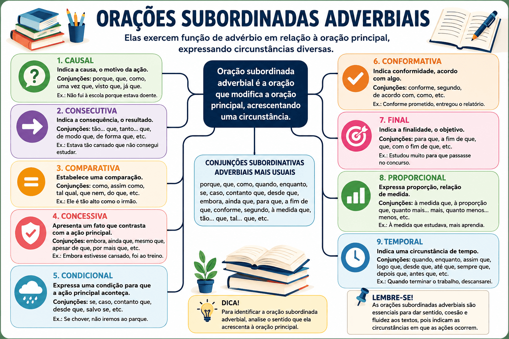

Orações Subordinadas Adverbiais: conceito, classificação, exemplos e tipos
As orações subordinadas adverbiais constituem um dos principais conteúdos da sintaxe do período composto e aparecem com frequência em vestibulares, concursos públicos, no ENEM e no PAES UEMA. Elas estabelecem diferentes relações de sentido com a oração principal, indicando circunstâncias como tempo, causa, condição, consequência, finalidade, concessão, comparação, conformidade e proporção. Dominar esse conteúdo permite compreender melhor a organização dos períodos, interpretar textos com mais precisão e produzir redações mais claras e coerentes.

Além do estudo da classificação, é importante compreender como essas orações se relacionam com os demais conteúdos da sintaxe. As orações subordinadas adverbiais fazem parte do estudo do período composto e se diferenciam das orações coordenadas, que apresentam independência sintática entre si. Também se distinguem das orações subordinadas substantivas, que exercem funções típicas dos substantivos, e das orações subordinadas adjetivas, responsáveis por caracterizar ou restringir um substantivo da oração principal.
Neste guia completo, você aprenderá o conceito das orações subordinadas adverbiais, conhecerá cada uma de suas classificações, entenderá os principais conectivos utilizados em cada caso e verá diversos exemplos comentados. Ao final da leitura, será capaz de identificar rapidamente o valor semântico dessas construções e diferenciá-las das demais orações presentes no período composto.
O que são orações subordinadas adverbiais?
As orações subordinadas adverbiais são aquelas que desempenham, em relação à oração principal, uma função semelhante à exercida por um advérbio. Assim como um advérbio modifica um verbo, um adjetivo ou outro advérbio, a oração subordinada adverbial modifica toda a oração principal, acrescentando uma circunstância que amplia ou especifica o sentido da informação apresentada.
Por essa razão, muitos professores afirmam que essas orações exercem o papel de um grande advérbio dentro do período composto. Se você ainda possui dúvidas sobre a função dos advérbios e suas classificações, vale a pena consultar também nosso conteúdo completo sobre advérbios da Língua Portuguesa, pois compreender esse assunto facilita bastante a identificação das orações subordinadas adverbiais.
Observe o exemplo abaixo:
Quando terminou a prova, os candidatos deixaram a sala.
Nesse período existem duas orações. A primeira, "Quando terminou a prova", depende da segunda para possuir sentido completo e estabelece uma circunstância de tempo em relação ao fato principal, expresso em "os candidatos deixaram a sala". Dessa forma, essa oração recebe a classificação de oração subordinada adverbial temporal.
Essa relação de dependência sintática é justamente a característica que diferencia as orações subordinadas das coordenadas. Enquanto as coordenadas apresentam autonomia sintática, as subordinadas necessitam da oração principal para que o período possua sentido completo.
Como identificar uma oração subordinada adverbial?
Embora existam nove classificações diferentes, todas as orações subordinadas adverbiais apresentam características comuns que facilitam sua identificação durante a leitura de um texto ou na resolução de questões de vestibulares. Observar essas características ajuda a reconhecer rapidamente a relação de sentido estabelecida entre as orações.
1. Depende sintaticamente da oração principal
A primeira característica é a dependência sintática. A oração subordinada não possui autonomia completa e necessita da oração principal para formar um período com sentido pleno. Quando isolada, normalmente transmite uma ideia incompleta ou deixa uma expectativa no leitor.
Embora estivesse cansado, continuou estudando.
A expressão "Embora estivesse cansado" desperta naturalmente a pergunta: "o que aconteceu apesar disso?". A resposta encontra-se na oração principal, demonstrando a relação de dependência existente entre elas.
2. Geralmente é introduzida por uma conjunção subordinativa
Na maioria das vezes, as orações subordinadas adverbiais são iniciadas por uma conjunção subordinativa, responsável por indicar a relação de sentido existente entre as orações. É justamente essa conjunção que permite identificar se a circunstância expressa é de causa, tempo, condição, finalidade, consequência ou qualquer outra classificação.
Entre as conjunções mais frequentes estão:
- quando;
- porque;
- como;
- embora;
- caso;
- se;
- desde que;
- à medida que;
- conforme;
- logo que;
- enquanto.
É importante destacar que uma mesma conjunção pode assumir valores diferentes dependendo do contexto. Por esse motivo, a classificação nunca deve ser feita apenas observando o conectivo. O ideal é analisar a relação de sentido estabelecida entre as duas orações.
3. Expressa uma circunstância
O principal papel da oração subordinada adverbial é acrescentar uma circunstância ao fato apresentado pela oração principal. Essa circunstância pode indicar tempo, causa, consequência, comparação, condição, finalidade, concessão, conformidade ou proporção, formando as nove classificações reconhecidas pela gramática tradicional.
Uma estratégia bastante eficiente consiste em formular perguntas para a oração principal. Se a subordinada responde a perguntas como "quando?", "por quê?", "com qual finalidade?" ou "em que condição?", provavelmente trata-se de uma oração subordinada adverbial.
Classificação das orações subordinadas adverbiais
A gramática normativa classifica as orações subordinadas adverbiais em nove tipos, de acordo com a circunstância expressa em relação à oração principal. Embora cada classificação possua conectivos mais frequentes, o aspecto mais importante é compreender o valor semântico estabelecido entre as orações, pois é exatamente esse tipo de análise que costuma ser exigido nas provas de Língua Portuguesa.
1. Oração subordinada adverbial causal
A oração subordinada adverbial causal expressa o motivo, a razão ou a causa pela qual ocorre o fato apresentado na oração principal. Em outras palavras, ela responde à pergunta "por quê?", explicando o que levou determinada ação ou acontecimento a ocorrer. Trata-se de uma das classificações mais frequentes em textos jornalísticos, científicos e argumentativos, pois permite estabelecer relações de causa e efeito entre os fatos.
Embora a conjunção porque seja a mais conhecida, existem diversos outros conectivos capazes de introduzir uma oração causal. Saber reconhecê-los amplia a capacidade de interpretação textual e evita confusões com outras classificações, como as orações consecutivas.
Principais conjunções causais
- porque;
- como (quando inicia o período);
- já que;
- visto que;
- uma vez que;
- porquanto;
- posto que (em alguns contextos).
Exemplos comentados
Como estava chovendo, cancelamos o passeio.
A oração "Como estava chovendo" apresenta o motivo que levou ao cancelamento do passeio. Portanto, exerce função de oração subordinada adverbial causal.
Não saiu porque estava doente.
Nesse exemplo, a doença explica por que a pessoa permaneceu em casa. A oração subordinada apresenta claramente a causa da ação principal.
Já que todos concordaram, iniciaremos o projeto hoje.
A concordância do grupo funciona como justificativa para o início imediato do projeto, caracterizando novamente uma oração subordinada adverbial causal.
2. Oração subordinada adverbial consecutiva
A oração subordinada adverbial consecutiva indica a consequência produzida pela informação apresentada na oração principal. Diferentemente da oração causal, que apresenta o motivo de um fato, a consecutiva mostra o resultado provocado por ele. Essa diferença costuma aparecer com frequência em vestibulares e concursos públicos.
Normalmente, a oração principal apresenta uma ideia intensificada por palavras como tão, tanto, tal ou tamanho, enquanto a oração subordinada apresenta a consequência dessa intensidade.
Principais conectivos consecutivos
- tão... que;
- tanto... que;
- tal... que;
- de modo que;
- de forma que;
- de sorte que.
Exemplos comentados
Choveu tanto que as ruas ficaram alagadas.
O alagamento representa a consequência da intensidade da chuva.
Estudou tanto que conquistou a aprovação.
A aprovação decorre da dedicação aos estudos. Assim, a oração subordinada indica consequência.
O vento era tão forte que derrubou diversas árvores.
O fato de as árvores terem sido derrubadas é consequência direta da intensidade do vento.
Diferença entre oração causal e consecutiva
Essa é uma das distinções mais importantes da sintaxe e costuma gerar dúvidas entre os estudantes. Embora ambas relacionem dois acontecimentos, elas estabelecem relações diferentes.
| Oração causal | Oração consecutiva |
|---|---|
| Apresenta a causa do fato principal. | Apresenta a consequência do fato principal. |
| Responde à pergunta "por quê?". | Responde à pergunta "qual foi o resultado?". |
| Exemplo: Não saiu porque estava doente. | Exemplo: Estava tão doente que não saiu. |
Observe que os dois períodos apresentam praticamente os mesmos fatos, mas a relação semântica muda completamente. No primeiro caso, a doença explica a ação. No segundo, a saída inexistente aparece como consequência da intensidade da doença.
3. Oração subordinada adverbial comparativa
A oração subordinada adverbial comparativa estabelece uma relação de comparação entre pessoas, objetos, situações ou ações. Seu objetivo é aproximar duas ideias para destacar semelhanças, diferenças ou graus de intensidade.
Esse tipo de oração aparece com frequência em textos literários, argumentativos e publicitários, justamente porque as comparações tornam a comunicação mais expressiva e facilitam a compreensão das ideias.
Principais conjunções comparativas
- como;
- assim como;
- tal qual;
- mais... do que;
- menos... do que;
- tão... quanto.
Exemplos comentados
Ele escreve como o pai escrevia.
A oração subordinada estabelece uma comparação entre o modo de escrever do filho e do pai.
Ela trabalha mais do que os colegas.
A intensidade do trabalho é comparada com a dos demais colegas.
O atleta treinava tanto quanto seus adversários.
Nesse caso, a oração evidencia igualdade entre os níveis de treinamento.
4. Oração subordinada adverbial concessiva
A oração subordinada adverbial concessiva expressa uma ideia contrária ao que normalmente seria esperado. Apesar da existência de um obstáculo, impedimento ou circunstância desfavorável, o fato apresentado na oração principal acontece normalmente.
A concessão transmite uma noção semelhante à de oposição, porém sem impedir a realização da ação principal. Esse aspecto diferencia as orações concessivas das condicionais, nas quais a ação depende do cumprimento de determinada condição.
Principais conjunções concessivas
- embora;
- ainda que;
- mesmo que;
- conquanto;
- posto que;
- apesar de que.
Exemplos comentados
Embora estivesse cansado, continuou estudando.
O cansaço poderia impedir o estudo, mas isso não acontece. A ação principal é realizada apesar da dificuldade apresentada pela oração subordinada.
Mesmo que chova, viajaremos amanhã.
A chuva representa um obstáculo possível, porém não altera a decisão de viajar.
Ainda que enfrentasse dificuldades, nunca desistia de seus objetivos.
As dificuldades existem, mas não impedem a continuidade da ação.
5. Oração subordinada adverbial condicional
A oração subordinada adverbial condicional expressa uma condição necessária para que o fato apresentado na oração principal possa ocorrer. Em outras palavras, ela estabelece uma hipótese ou uma circunstância cuja realização determina a ocorrência da ação principal. Esse tipo de construção é muito comum tanto na linguagem cotidiana quanto em textos jurídicos, científicos e argumentativos, pois permite indicar possibilidades e relações de dependência entre acontecimentos.
Ao identificar uma oração condicional, procure verificar se a oração principal depende do cumprimento de determinada condição. Uma maneira simples de fazer isso é formular a pergunta: "em que condição isso acontecerá?". Se a oração subordinada responder a essa pergunta, trata-se de uma oração subordinada adverbial condicional.
Principais conjunções condicionais
- se;
- caso;
- desde que;
- contanto que;
- a menos que;
- salvo se;
- sem que.
Exemplos comentados
Se estudar regularmente, será aprovado.
A aprovação depende diretamente do cumprimento da condição estabelecida pela oração subordinada: estudar regularmente.
Caso chova, o evento será adiado.
A chuva representa uma hipótese que condiciona o adiamento do evento.
Desde que todos concordem, iniciaremos o projeto.
O início do projeto está condicionado à concordância de todos os participantes.
6. Oração subordinada adverbial conformativa
A oração subordinada adverbial conformativa indica que a informação apresentada na oração principal ocorre de acordo com determinada regra, orientação, norma, opinião ou referência. Em outras palavras, estabelece uma relação de conformidade entre as duas orações.
Esse tipo de construção aparece frequentemente em textos acadêmicos, administrativos, jurídicos e jornalísticos, nos quais é necessário indicar que determinada informação está em conformidade com uma fonte ou regulamento.
Principais conjunções conformativas
- conforme;
- segundo;
- consoante;
- como.
Exemplos comentados
Conforme determina o edital, as inscrições encerram-se amanhã.
A oração subordinada informa que o encerramento das inscrições ocorre de acordo com o que estabelece o edital.
Segundo informou a direção, haverá aula normalmente.
Nesse caso, a oração subordinada apresenta a fonte da informação.
Como estabelece a Constituição, todos são iguais perante a lei.
A oração subordinada demonstra que a afirmação está em conformidade com uma norma jurídica.
7. Oração subordinada adverbial final
A oração subordinada adverbial final indica a finalidade, o objetivo ou a intenção da ação expressa na oração principal. Ela responde, normalmente, à pergunta "com qual finalidade?" ou "para quê?".
Essa classificação é bastante utilizada em textos instrucionais, científicos e argumentativos, pois permite explicar o propósito de determinada ação.
Principais conjunções finais
- para que;
- a fim de que;
- que (em alguns contextos).
Exemplos comentados
Estudou bastante para que fosse aprovado.
A oração subordinada apresenta claramente o objetivo do estudo: obter a aprovação.
Economizou dinheiro a fim de que pudesse viajar nas férias.
A economia de recursos possui uma finalidade específica, expressa pela oração subordinada.
Falou baixo para que ninguém ouvisse.
Nesse exemplo, a oração subordinada revela a intenção da ação principal.
8. Oração subordinada adverbial proporcional
A oração subordinada adverbial proporcional estabelece uma relação de crescimento, diminuição ou variação proporcional entre dois acontecimentos. À medida que um fato evolui, outro também se modifica na mesma proporção.
Esse tipo de oração é muito utilizado em textos científicos, estatísticos e argumentativos, pois permite demonstrar relações de proporcionalidade entre fenômenos.
Principais conjunções proporcionais
- à medida que;
- à proporção que;
- quanto mais... mais;
- quanto menos... menos;
- ao passo que.
Exemplos comentados
À medida que estudava, aumentava sua confiança.
Os dois acontecimentos evoluem simultaneamente: quanto mais estudava, mais confiança adquiria.
Quanto mais praticava, melhores eram seus resultados.
Há uma relação direta de proporcionalidade entre prática e desempenho.
À proporção que a cidade crescia, aumentavam os desafios urbanos.
O crescimento urbano ocorre paralelamente ao aumento dos desafios enfrentados pela população.
9. Oração subordinada adverbial temporal
A oração subordinada adverbial temporal indica o momento em que ocorre a ação da oração principal. Ela estabelece relações cronológicas entre os acontecimentos, podendo indicar simultaneidade, anterioridade ou posterioridade.
Entre todas as classificações, essa é uma das mais fáceis de identificar, pois normalmente responde à pergunta "quando?".
Principais conjunções temporais
- quando;
- enquanto;
- assim que;
- logo que;
- depois que;
- antes que;
- mal;
- desde que (com valor temporal).
Exemplos comentados
Quando terminou a aula, os estudantes deixaram a sala.
A oração subordinada informa o momento em que ocorreu a ação principal.
Enquanto estudava, ouvia música.
As duas ações acontecem simultaneamente.
Assim que recebeu o resultado, comemorou com a família.
A comemoração ocorreu imediatamente após o recebimento do resultado.
Resumo das classificações
| Classificação | Ideia expressa | Pergunta principal |
|---|---|---|
| Causal | Causa | Por quê? |
| Consecutiva | Consequência | Qual foi o resultado? |
| Comparativa | Comparação | Comparado a quê? |
| Concessiva | Oposição sem impedir a ação | Apesar de quê? |
| Condicional | Condição | Em que condição? |
| Conformativa | Conformidade | De acordo com quê? |
| Final | Finalidade | Para quê? |
| Proporcional | Proporção | À medida que? |
| Temporal | Tempo | Quando? |
Diferença entre oração concessiva e oração condicional
As orações concessivas e condicionais costumam gerar dúvidas porque ambas apresentam uma ideia relacionada a uma hipótese. Entretanto, a diferença entre elas é bastante significativa.
Na oração condicional, a realização da oração principal depende do cumprimento de determinada condição. Já na oração concessiva, existe um obstáculo ou uma circunstância desfavorável, mas esse fato não impede que a ação principal aconteça.
| Condicional | Concessiva |
|---|---|
| Se estudar, será aprovado. | Embora estivesse cansado, continuou estudando. |
| A aprovação depende da condição. | A ação acontece apesar da dificuldade. |
Como esse conteúdo é cobrado no PAES UEMA e em vestibulares
Nas provas do PAES UEMA, do ENEM e de diversos vestibulares, as orações subordinadas adverbiais raramente aparecem de forma isolada. Em vez de solicitar apenas a classificação gramatical, as bancas costumam avaliar a capacidade do candidato de compreender as relações de sentido estabelecidas entre as orações dentro de um texto.
Por esse motivo, durante a resolução das questões, procure identificar inicialmente a oração principal, observar o conectivo empregado e analisar a circunstância expressa pela oração subordinada. Essa estratégia torna muito mais simples reconhecer se a relação estabelecida é de causa, consequência, condição, finalidade, tempo ou qualquer outra classificação.
Perguntas frequentes
Quantos tipos de orações subordinadas adverbiais existem?
Segundo a gramática normativa, existem nove classificações: causal, consecutiva, comparativa, concessiva, condicional, conformativa, final, proporcional e temporal.
Como identificar rapidamente uma oração subordinada adverbial?
O primeiro passo é localizar a oração principal. Em seguida, identifique a conjunção subordinativa e analise a circunstância de sentido estabelecida entre as duas orações. Essa estratégia costuma ser mais eficiente do que decorar apenas listas de conectivos.
As conjunções sempre determinam a classificação?
Não. Algumas conjunções podem assumir valores diferentes dependendo do contexto. Por isso, a análise do sentido do período é sempre mais importante do que observar apenas a palavra que introduz a oração.
Esse conteúdo é cobrado no ENEM e no PAES UEMA?
Sim. As orações subordinadas adverbiais aparecem frequentemente em questões de gramática, interpretação de textos e análise sintática, sendo um conteúdo recorrente tanto no ENEM quanto no PAES UEMA e em diversos concursos públicos.
As orações subordinadas adverbiais desempenham um papel fundamental na construção do sentido dos períodos compostos, pois estabelecem relações lógicas entre os acontecimentos apresentados em um texto. Compreender essas relações permite interpretar informações com maior precisão, produzir textos mais claros e resolver questões gramaticais com segurança.
Em vez de memorizar apenas as conjunções subordinativas, procure identificar o valor semântico expresso pela oração subordinada em relação à oração principal. Essa abordagem facilita a aprendizagem, fortalece a interpretação textual e aumenta significativamente o desempenho em avaliações como o PAES UEMA, o ENEM e os principais vestibulares do país.
Quiz — Orações Subordinadas Adverbiais (nível intermediário)
Questão 1 — Em qual alternativa há uma oração subordinada adverbial temporal?
Questão 2 — A oração destacada em "Como estava doente, faltou à aula" é classificada como:
Questão 3 — Em qual alternativa a oração subordinada adverbial expressa condição?
Questão 4 — A oração destacada em "Embora estivesse nervoso, apresentou um excelente seminário" é:
Questão 5 — Em "O atleta treinou tanto que venceu a competição", a oração subordinada expressa:
Questão 6 — Em qual alternativa a oração subordinada adverbial indica finalidade?
Questão 7 — A oração destacada em "À medida que estudava, aumentava sua confiança" é classificada como:
Questão 8 — Em "Conforme determina o regulamento, todos devem usar crachá", a oração subordinada é:
Questão 9 — Qual alternativa apresenta uma oração subordinada adverbial comparativa?
Questão 10 — A principal característica das orações subordinadas adverbiais é:
Referências
- BECHARA, Evanildo. Moderna Gramática Portuguesa. Rio de Janeiro: Nova Fronteira.
- CUNHA, Celso; CINTRA, Lindley. Nova Gramática do Português Contemporâneo. Rio de Janeiro: Lexikon.
- CASTILHO, Ataliba T. de. Nova Gramática do Português Brasileiro. São Paulo: Contexto.
- ABAURRE, Maria Luiza; ABAURRE, Maria Bernadete; PONTARA, Marcela. Gramática: Texto, Análise e Construção de Sentido. São Paulo: Moderna.
Explore Outros Conteúdos
Continue seus estudos acessando outras seções do site Mestre Kira: